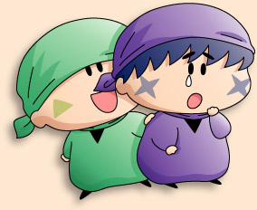

ヤシチ「あいつら～！まったくだらしないな…」
ヤマネ「サスケ先輩とハンゾー先輩がどうなされたのでございましょう？」
ヤシチ「２人とも風邪で歩けないとはな…。
仕方ない。ヤマネと拙者の２人だけで行くぞ」
ヤマネ「ヤシチ兄様と２人だけ…でございますか！」
何と何と、修行として妖精忍者４人で行くはずだった温泉旅行が、サスケ＆ハンゾーのダウンにより一転。まさか恋人同士（ヤマネにとって）の温泉旅行に変わろうとは…。普段は控えめのヤマネも、これから起こるであろう楽しい出来事を想像して、顔が赤く染まりっぱなしになるのでした。
もちろんそんなヤマネの気持ちに、ヤシチも薄々とですが気が付いていますよね。ヤマネの気持ちをなかなか受け止めようとしないヤシチは、こうしてヤマネとは目を合わせずに背中越しに話しかけたりするんでしょうね。
一方のサスケとハンゾーはと言うと…。

サスケ「兄貴とヤマネのためであれば、これで良かったんだぜ…」
ハンゾー「早く元気を出すのら～」
サスケ「ハンゾー～～っ」（泣）
兄貴思いのサスケとハンゾーだから、あえて仮病を使ってヤシチとヤマネをくっつけようとしていました（決して私が妖精をたくさん描きたくないからではありません^^;）。
あ、このヤシチへの配慮については、サスケによる提案という設定にしておきます。ホントはヤマネと一緒にいたいサスケだけど、兄貴のためにも、また自分のためにも彼なりに何とか勇気を出すのでした。
(2004/10/21)